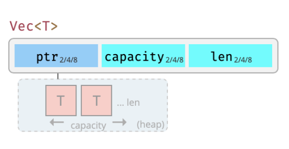
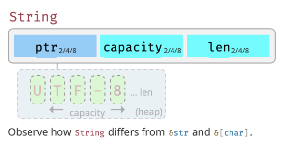
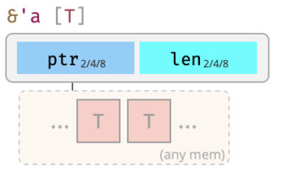
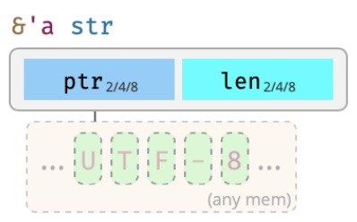
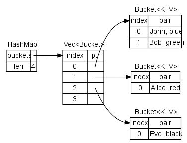

class: center, middle # Allocating Less: Really Thin Rust Cloud Apps ## 2021 CNCF RustDay Europe .red[Evan Chan] .red[Senior Data Engineer - [UrbanLogiq](https://urbanlogiq.com)] http://velvia.github.io/presentations/2021-cncf-rustday-alloc-less --- # Blurb about UrbanLogiq --- # Why Thin Cloud Apps? <div class="mermaid"> graph LR; VMs --> Containers Containers --> Serverless Containers --> WebAssembly </div> * Cloud and infrastructure is getting smaller, thinner, and more concurrent * Allocations are slow! * We live in a data-rich world * Using less memory = more eco friendly! --- # Why Rust for Thin Cloud Apps? * No compromise - performance, safety, AND abstractions * No GC - precise control over memory * Huge amount of control over memory usage, layout * Can avoid allocations in so many clever ways * Skipping allocations also == better performance! * Can opt out of standard library * Can write kernel level code, OSes, hypervisors, infrastructure * Secure * Provably correct concurrency --- # How I Got Into Rust * FiloDB - in memory TSDB (github.com/filodb/FiloDB) * 100 billion compressed data points on single node * Super high performance * 100% Scala * Huge GC pauses due to keeping 100GB's of data on heap * Very custom, nasty code to get around JVM memory model, not maintainable * 2018 [SBTB: Brian Cantrill](https://www.youtube.com/watch?v=2wZ1pCpJUIM) * "You should write it in Rust!" * Rust: "Pick 3 - performance, safety, and high-level abstractions" * Better abstractions and safety, much better performance * Fell in love with combo of perf, safety, and ability to control everything * SIMD and ability to maximize hardware very appealing ??? Manual offheap memory management, custom byte twiddling, super nasty and error prone --- class: center, middle # How Rust Apps Use Memory --- # Rust Memory Model .left-column[ ### Stack * Primitives * Structs (fixed size) * Fixed size arrays * Pointers/references ] .right-column[ ### Heap * Vecs (lists, arrays) * Strings * Dynamic-sized objects * Box * trait objects Rust has no GC - how does it manage heap memory? ] ??? This is a really important point for those of you coming from GC languages - JVM, Python, Go, etc. Rust has no garbage collector!!! It "knows" when you're done using stuff. Tradeoff is you have to understand ownership to make the compiler happy. --- # Rust Memory Model: Safety Simple principle: ### Allow mutation only if someone has *unique* access to data. If your Rust program compiles, then it is free of memory corruption bugs and data races. Period. --- # Details - Vec, String   24 bytes on x86/64-bit CPUs (+ n * sizeof(T)) --- # Details - `&str`, `&[...]`, etc.   --- # What about HashMaps?  * Example: `HashMap<String, String>` * Each bucket slot needs a `Vec<Bucket>` (24 bytes) + 24 bytes for each of the key and value Strings * Plus memory for the key and value string UTF-8 bytes themselves * Overhead of 72 bytes/entry is >> the size of smaller keys and values! * Not just a waste of memory, but allocations are slow too! --- # Where You're Allocating in your Apps * Search for every `.clone()`! * Watch out for `Vec`s * Nested data structures esp Strings * `Box<...>` * Trait objects (eg `dyn`) * Error types * Serialization --- # Benchmarking Memory Usage * Dynamic, ongoing memory usage * "What/how am I allocating over time" * [Heaptrack](https://github.com/KDE/heaptrack) (Linux only) * [dhat](https://docs.rs/dhat/0.2.2/dhat/) - swap out your global allocator, track usage * Static heap analysis * "Whose using up all my memory/heap right now" * Fairly difficult since Rust does not have a GC * Can get overall memory usage stats with jemalloc-ctl, differential analysis * or [stats-alloc](https://crates.io/crates/stats_alloc) * Can profile data structures with [deepsize](https://crates.io/crates/deepsize) TODO: run HeapTrack and get a screen snapshot! --- class: center, middle # Remember, in Rust, the more you type, the more you allocate! --- class: center, middle # Thin Apps - Minimizing Allocations --- # Borrow, don't Move Do you see function signatures like this? ```rust fn process_some_list(list: Vec<String>) -> Foo {} ``` The caller has to allocate twice here - once for the Vec and once for each String. Instead, borrow if possible: ```rust fn process_some_list(list: &[&str]) -> Foo {} ``` The above signature gives the caller two chances to avoid allocation. Or, for even more flexibility, pass in an iterator: ```rust fn process_some_list(it: I) -> Foo where I: IntoIterator<Item = &str> {...} ``` --- # Flattening Data Structures Avoid nested dynamically-sized structures like `Vec<String>`, `Vec<Vec<...>>`, etc. These crates help: * [smallvec](https://crates.io/crates/smallvec) - inline/stack small lists * [nested](https://crates.io/crates/nested) - Much smaller storage for `Vec<String>` / `Vec<Vec<...>>` * [tinyset](https://docs.rs/tinyset/0.4.2/tinyset/) - space efficient sets and maps * [String](https://docs.rs/string/0.2.1/string/) - configurable storage, incld stack byte arrays! * [Inlinable String](http://fitzgen.github.io/inlinable_string/inlinable_string/index.html) - stores strings up to 30 chars inline, automatic promotion to heap string if needed. * Also see [smallstr](https://docs.rs/smallstr/0.2.0/smallstr/) * [kstring](https://docs.rs/kstring/0.1.0/kstring/) - intended for map keys: immutable, inlined for small keys, and have Ref/Cow types to allow efficient sharing. :) Test using 50,000 small strings: (https://github.com/velvia/rust-alloc-test) | Storage type | jemalloc bytes used | | --------------- | ----------------------- | | `Vec<String>` | 2.34 MiB | | `Nested<String>` | 1.83 MiB. | --- # Reducing clone with Async * You might find yourself cloning lots of things for async closures/functions and Futures * Consider using `Arc<..>` instead of clone(), esp for lists, large, immutable things * Consider using Actors. * Keep state local, pass small messages/events only * Or, encapsulate frequently-shared state inside structs * Other benefits - less contention, easily scalable/distributable systems * [Cow](https://doc.rust-lang.org/std/borrow/enum.Cow.html)? * [Efficiently Escaping Strings using Cow](https://fullstackmilk.dev/efficiently_escaping_strings_using_cow_in_rust/) * Avoid cloning strings if you don't need to modify them a lot! ??? For example, Arrow Rust wraps many of its data structures inside Arc<> --- # How slow is Arc, really? * `Arc<>.get()` is basically a compare-and-exchange (CAS) on get * Estimates for CAS/increment on x86 vary between 30ns - 120ns * depending on which level of cache or main memory your struct lies Rumor: Apple M1 silicon: CAS is ~6ns --- # Avoiding Trait Objects with Enums If all your trait impl's are within your codebase, you can use enums via [enum-dispatch](https://crates.io/crates/enum_dispatch) * Avoid Box and allocating for each trait object. It's just an enum! * Static dispatch - up to 10x faster! Replace this: ```rust fn process(thing: Box<dyn MyBehavior>) { thing.some_method(); // <-- dynamic dispatch, and you have to Box thing } ``` with: ```rust #[enum_dispatch] enum MyBehaviorEnum { MyImplementorA, MyImplementorB, } fn process(thing: MyBehaviorEnum) { thing.some_method(); // <-- static dispatch && no heap alloc!! :) } ``` --- # (No)Serialization Serialization could easily be the top memory/allocation hog in a data-driven application. Example: ```rust let p: Person = serde_json::from_str(data)?; ``` 1. `serde-json` has to deserialize from raw JSON -> intermediate `serde_json::Value` types 2. Now one has to translate from `Value` structs to `Person` -- Better: [json-rust](https://github.com/maciejhirsz/json-rust) uses a `Short` value type for short strings. * Guess what? Most JSON strings, especially keys, are short * Avoids allocation (see study coming) Slightly better: binary protocols (Protobuf, Thrift, etc.) --- # (No)Serialization II Best: avoid serialization altogether. "No-copy" / "No-unpacking" protocols: * [Flatbuffers](https://google.github.io/flatbuffers/) * [Cap'n Proto](https://capnproto.org) - from the creator of Protocol Buffers * [Apache Arrow](https://docs.rs/arrow/3.0.0/arrow/index.html) (for tabular data) * [rkyv](https://crates.io/crates/rkyv) - zero-copy deserialization, no need for generated classes Or, for simple structs, just use [scroll](https://crates.io/crates/scroll). I can verify that it compiles down to almost machine read/write semantics fast (assuming x86/Little Endian). --- # A JSON Processing Example Using the [airlines](https://think.cs.vt.edu/corgis/datasets/json/airlines/airlines.json) JSON dataset: * MacBook Pro 2020 * Rust 1.45 * Standard allocator (wrapped in [dhat](https://docs.rs/dhat/0.2.2/dhat/) for heap profiling) * (https://github.com/velvia/rust-alloc-test) | JSON library | Runtime | Allocations | |---------------|-----------|-----------------| | serde-json | 49.2ms | 24.9 MiB | Analysis from DHAT shows 90% of the 24.9MiB allocated comes from the deserialization of JSON objects (maps). --- # JSON Processing - serde-json Output from DHAT: ``` ├─▶ PP 1.2/5 (2 children) { │ Total: 22,286,848 bytes (89.46%, 38,692,780.32/s) in 35,264 blocks (18.18%, 61,222.75/s), avg size 632 bytes, avg lifetime 73.51 µs (0.01% of program duration) │ At t-gmax: 5,056 bytes (28.22%) in 8 blocks (12.7%), avg size 632 bytes │ At t-end: 0 bytes (0%) in 0 blocks (0%), avg size 0 bytes │ Allocated at { │ #1: 0x103a595bb: alloc::alloc::exchange_malloc (alloc.rs:268:11) │ #2: 0x103a595bb: alloc::boxed::Box<T>::new (boxed.rs:175:9) │ #3: 0x103a595bb: alloc::collections::btree::node::Root<K,V>::new_leaf (node.rs:157:43) │ #4: 0x103a595bb: core::ops::function::FnOnce::call_once (function.rs:232:5) │ #5: 0x103a595bb: core::option::Option<T>::get_or_insert_with (option.rs:858:26) │ #6: 0x103a595bb: alloc::collections::btree::map::BTreeMap<K,V>::ensure_root_is_owned (map.rs:2282:9) │ #7: 0x103a595bb: alloc::collections::btree::map::BTreeMap<K,V>::entry (map.rs:1059:9) │ #8: 0x103a595bb: alloc::collections::btree::map::BTreeMap<K,V>::insert (map.rs:827:15) │ #9: 0x103a58082: serde_json::map::Map<alloc::string::String,serde_json::value::Value>::insert (map.rs:105:9) │ #10: 0x103a58082: <serde_json::value::de::<impl serde::de::Deserialize for serde_json::value::Value>::deserialize::ValueVisitor as serde::de::Visitor>::visit_map (de.rs:117:25) │ #11: 0x103a56625: <&mut serde_json::de::Deserializer<R> as serde::de::Deserializer>::deserialize_any (de.rs:1345:31) │ #12: 0x103a56625: serde_json::value::de::<impl serde::de::Deserialize for serde_json::value::Value>::deserialize (de.rs:129:9) │ } │ } ``` --- # JeMalloc and MiMalloc In general: easy way to improve allocation *performance* though not memory usage. JeMalloc: * Used to be default for Rust. * Created by Facebook for reducing fragmentation; good concurrency performance * Uses a bit more memory to optimize frequent allocations * Example of 50k small string allocations: Overhead is about 11% * Using deepsize to compare actual usage vs jemalloc-ctl (See https://github.com/velvia/rust-alloc-test) [MiMalloc](https://docs.rs/mimalloc/0.1.24/mimalloc/): from Microsoft * Small, "secure" replacement for Malloc (allocations are encrypted?) * Claims to be faster than jemalloc & tcmalloc * Supports separate "heaps" that can be cleaned up * In my experience, pretty fast but has more compatibility issues/panics with some crates (notably, Arrow) [tcmalloc](https://crates.io/crates/tcmalloc) from Google --- # Bump, Arena Allocators --- # no_std --- # Structs and Performance ```scala final case class ChunkQueryInfo(info: ChunkSetInfo, tsReader: LongDataReader, valueReader: VectorDataReader) final case class ChunkSetInfo(id: Long, startTime: Long, endTime: Long, numRows: Int, chunks: Seq[ChunkPointer]) val chunksToQuery: Seq[ChunkQueryInfo] ``` 16 byte header per object: <div class="mermaid"> graph LR; CQI(16B:ChunkQueryInfo) --> CSI(16B:ChunkSetInfo) CQI --> VDR(16B:VectorDataReader) CSI --> Seq(16B:Seq of ChunkPointer) Seq --> Item1[java.lang.Long] Seq --> Item2[java.lang.Long] </div> For chunks length of 2, each `ChunkQueryInfo` has ~128 bytes overhead ??? Example1: Scala object graph, from FiloDB, bunch of case classes Really big deal for data processing and databases. Overhead maybe as big as data fields themselves --- # Thank You Very Much! * https://velvia.github.io/about * https://github.com/velvia * [@evanfchan](https://twitter.com/Evanfchan) * [IG: @platypus.arts](http://instagram.com/platypus.arts) <img src="startrails.png" width="800">